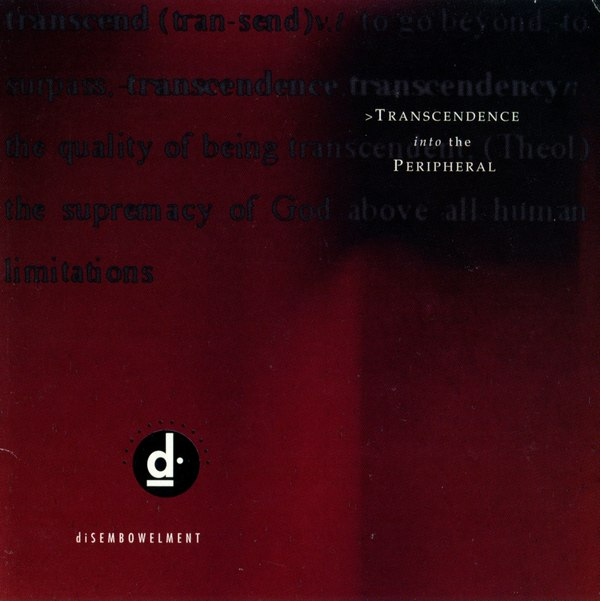
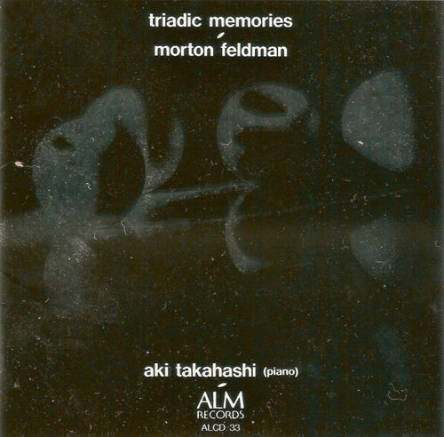

Transcendence Into the Peripheral
| Artist | diSEMBOWELMENT |
|---|---|
| Released | 1 September 1993 |
| Length | 59 minutes 36 seconds |
| Genres | Death Doom Metal, Funeral Doom Metal |

Triadic Memories
| Artist | Morton Feldman - Aki Takahashi |
|---|---|
| Released | 1989 |
| Length | 61 minutes 18 seconds |
| Genres | Modern Classical, Serialism |
British Murder Boys
| Artist | British Murder Boys |
|---|---|
| Released | 9 February 2015 |
| Length | 72 minutes 26 seconds |
| Genre | Industrial Techno |